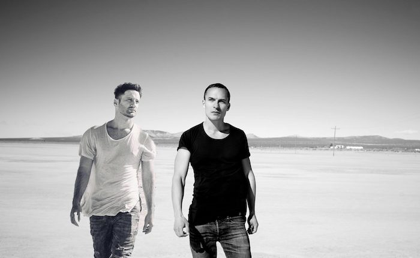

Jerome Isma-Ae Teams Up With Alastor for the Brooding “Wilde”


Production powerhouse Jerome Isma-Ae has been releasing explosive progressive, trance and techno through his Jee Productions label for well over a decade. Now part of the Armada Music family, the imprint’s releases have been charted by everyone from Armin van Buuren to Mark Knight. While Isma-Ae makes regular excursions over to labels like Anjunabeats and Armind, Jee Productions remains his true home. We’ve got one of its more brooding upcoming releases as our TOTD.
While it’s grounded early on by percussive techno rhythms and sinister bass growls, “Wilde” is still a power progressive record—albeit one that’s allowed to take its time getting there. It’s the breakdown several minutes in that those epic progressive melodies are allowed to creep in, though they’re kept in check after the drop, so that the darker vibes are kept in the spotlight.
Available May 22 via Jee Productions.
Follow Jerome Isma-Ae on Facebook | Twitter | SoundCloud
Follow Alastor on Facebook | Twitter | SoundCloud
Follow Jee Productions on Facebook | SoundCloud